Introduction - ACCESSORIES
- Path
- Descriptions > 55 ELECTRICAL EQUIPMENT > 5570 ACCESSORIES > Introduction - ACCESSORIES
- Kind
- system description
- Applies to
- all engines; all production periods
- Interactive page
- https://sloeber94.github.io/elrnDB-a156/en/#/3239233
Applies to: all engines; all production periods
RADIO SYSTEM
The vehicle is prepared for the installation of a radio system.
This preparation comprises:
- radio compartment
- radio supply cables
- front loudspeakers and separate tweeters, located in the doors
- rear speakers
- connecting cables between radio and loudspeakers
- rear speaker cable, on the parcel shelf under the back window (speakers are not provided)
- aerial built into the back window controlled by a special electronic device
- aerial coaxial cable.
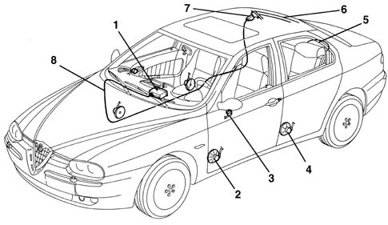
1, Radio 2, Front loudspeaker 3, Tweeter 4, Rear loudspeaker 5, Predisposition for speaker on the parcel shelf 6, Aerial in the heated rear window 7, Aerial ontrol unit 8, Aerial coaxial cable
Alpine car radio
An optional radio system with fixed radio set is available. This is an ALPINE set, with RDS decoder and CD changer control. The radio has the following functions:
Radio section
- RDS function selector / TI (Traffic Info) function selector;
- Band selector (FM1 ? FM2 ? MW ? LW);
- Cassette/CD selector;
- Preselected stations scanning
- Preselection / memorization of up to a maximum of 6 stations per band;
- Auto-Memory / Automemory band selection;
- Manual / Automatic tuning UP
- Manual / Automatic tuning DOWN
- Program type function selection (PTY);
- Tuning mode selection (DX ? LOC ? MAN);
- Predisposition for emergency alarm reception
- cassette section
- Autoreverse;
- Fast forward and fast rewind;
- Cr/Me tape automatic detection and equalisation with sound reproduction optimisation;
- Program Music Search function (automatic search for previous/next track function);
- Repeat function (repeat last track);
- Blank Skip function (automatically skip empty tracks on tape function);
- Tape Scan function (scan tracks on cassette function);
- Dolby B (noise reduction circuit).
Compact disc section
(if player is fitted)
Disc selection;
Track selection (forward/back);
Random track selection (MIX function);
Track/CD repeat selection;
Scanning of tracks on CD (Scan function);
Skip forward/back through tracks.
Audio section
- Pause function
- Reset function (Bass, Treble, Balance, Fader in central position);
- Loudness function;
- Separate bass/treble adjustment;
- Right/left and front/rear channel balancing;
- Sound Flavour function (CLASSIC - ROCK - JAZZ - FLAT equalisation);
- Presetting volume level of FM band stations;
- Presetting volume level for TI function (Traffic Information).
Radio functions
Refer to the illustration.
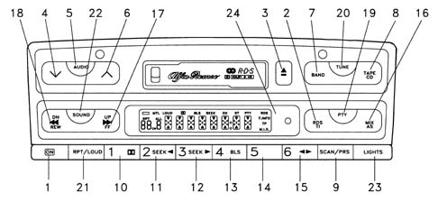
1, Power ON-OFF 2, Function selector RDS / Function Selector TI (TRAFFIC INFO) 3, Cassette eject 4, Decreasing selection; special audio control 5, Select mode BASS / TREBLE / BALANCE / FADER / VOLUME; Reset BASS / TREBLE / BALANCE / FADER (Activate these functions by pressing the corresonding key for at least 2 seconds) 6, Increasing selection; special audio control 7, Band selection FM1 - FM2 - MW - LW; Radio selector; Radio selector 8, Cassette/CD selector 9, Scanning preselected stations; Scanning tracks 10, Preselect / Store station 1/ Select Dolby B Function; Select CD no. 1 11, Preselect / Store station 2; Backward track search; Select CD no. 2 12, Preselect / Store station 3; Forward track search; Select CD no. 3 13, Preselect / Store station 4; Select Blank Skip Function; Select CD no. 4 14, Preselect / Store station 5; Select CD no. 5 15, Preselect / Store station 6; Manual Cassette Reverse Select CD no. 6 16, Auto-Memory / Automemory Band Selection (Select these functions by pressing the corresponding key for at least 2 seconds); Random Track Selection (MIX) 17, Manual / Automatic Tuning UP; Tape fast forward FF; Forward Track Search / Fast Forward FF 18, Manual/Automatic Tuning DOWN Tape Rewind REW; Back/Forward Track Search Fast REW 19, Select Program Type Function (PTY) 20, Select Tuning Mode DX-LOC-MAN 21, LOUDNESS function selector; Track Repetition Selector; Track /CD Repetition Selector 22, SF OFF - CLASSIC - ROCK - JAZZ - FLAT - SF OFF 23, Key lighting On / Off selector 24, Antitheft LED
Connections
Refer to the illustration.
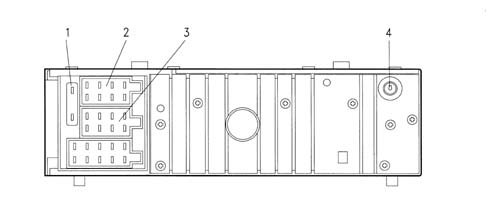
1, Additional fuse 2, Connector A 3, Connector B 4, Aerial coaxial cable connecting socket 5, Connector C: CD player connection
Radio pin out
Connector A, 8-way
1 + Steering wheel controls (predisposition)
2 - Steering wheel controls
3 + Ignition
4 + Battery
5 Back window aerial enablement
6 + Lighting
7 + Battery (security CODE)
8 Earth
Connector B, 8-way
1 Rear loudspeaker, right +
2 Rear loudspeaker, right -
3 Front loudspeaker, right +
4 Front loudspeaker, right -
5 Front loudspeaker, left +
6 Front loudspeaker, left -
7 Rear loudspeaker, left +
8 Rear loudspeaker, left -
Cd connection|
Wiring is available for connecting an optional CD player in the boot by means of a multipolar cable
Connector C, 10-way
1 Right channel signal +
2 Left channel signal +
3 Audio earth
4 + Battery
5 + Battery
6 Bus earth
7 Bus
8 N.C.
9 N.C.
10 Phone mute
Antitheft protection
The radio is fitted with a removable control panel. The radio is unusable with the panel removed because the power supply to the radio system is cut off. The power suppy is automatically restored when the panel is refitted.
The antitheft system is completed by:
- a secret 4-figure code, indicated on a Code Card;
- an antitheft led, which flashes with the radio off and the engine off.
Aerial
The car is fitted with an internal aerial screen-printed to the back window. It will only receive AM stations. The FM station reception screen-printing is included in the demister element.
An aerial signal amplifier is located on the right rear pillar.
Speakers
The car is fitted as standard with a predisposition for the installation of a radio system complete with loudspeakers. The acoustic system comprises:
- 2 tweeters with a power of 40 W max each;
- 4 diffusers Ø 165 mm (2 front and 2 rear) with power 40 W each (40W + 8W for the passenger side front diffusor, if the handsfree kit is fitted).
"radiophone" radio
The car may optionally be fitted with a Blaupunkt radio with a built-in GSM phone, known as a "RADIOPHONE® ".
The radio will fit into a normal radio compartment.
The radiophone can be used as a radio if a phone call is not being made or when waiting for a call.
The telephone system (the keyboard on the Radiophone allows the desired number to be dialled) has the following features:
- GSM type equipment;
- SIM card (which also acts as a KEY CARD);
- incoming number identification;
- debit indication.
Full details of the specifications and the operation of the RADIOPHONE are given in the "OWNER'S HANDBOOK".
The complete system consists of:
- two separate aerials (one for the radio and one for the phone): the first is the aerial normally built into the rear window for the standard radio set. The second is a special aerial located at the rear in the middle of the roof.
- phone microphone, located on the interior rear view mirror base
separate front power and tweeter speakers, located in the doors;
special "twin cone" right front speaker (used by both the radio and the telephone);
rear speakers, located in the doors;
leads connecting the radio to the speakers;
lead for the rear speakers on the parcel shelf under the rear windscreen (speakers not supplied);
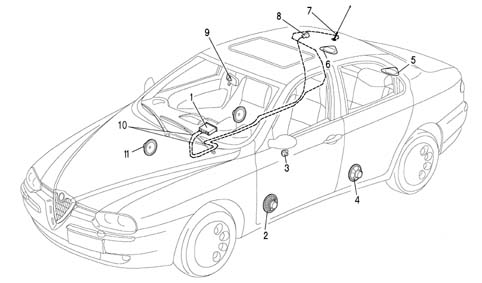
1, Radio 2, Front loudspeaker 3, Tweeter 4, Rear loudspeaker 5, Predisposition for speaker on the parcel shelf 6, Aerial, incorporated in the rearscreen 7, Phone aerial 8, Aerial control unit in rear window 9, Microphone 10, Aerial coaxial cables 11, Twin cone speaker
-
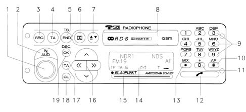
Main radiophone controls
1 - ON / OFF - the instrument must be on in order to use the phone.
2 - I / AUD - The microphone can be cut out during a phone call (the person at the other end of the phone
3 - SRC - Press this button to end phone mode and switch automatically to the most recent audio function (radio, cassette player or CD). Phone mode takes priority: it is not possible to switch to audio mode during a phone conversation or while attempting to call a phone number.
4 - TA- Press this key to cancel traffic information priority during a phone call.
5 - TS / BND - Press this button to transfer from phone operation using a handset to phone operation using microphone and speakers. Press the same key again to go back to operation using a handset.
9 - Selection buttons - Used to dial phone numbers or select a number already stored on a SIM card. Press one of the keys on the right side of the keypad to answer a call.
10- AF / # - Use to enter special characters
11- + / 0 - Use to enter the phone number
12 - (phone symbol) - Press this key to transfer to phone mode, to answer a call or to end a call
13 - MIX / ? - Use to enter special characters, such as blank spaces, and select numbers stored on a SIM card directly.
14 - Display - Use the displays to operations carried out in radio mode (radio station, PIN code, radio channel search,..) or phone mode (number dialled, phone directory,...)
15 - Protection system with antitheft card - A SIM card must be used to access all functions available while in phone mode. A KeyCard can only be used to make emergency calls. The SIM card also provides antitheft functions.
16 - Selection keys - ? / V - Use to move between the different items in the radio and phone menu. - << / >> Use to correct items in the phone directory or DSC (Direct Soft-ware Control) menu. Used to move the cursor to the left and right during data entry.
17 - ME - Used to activate the phone directory: press lightly to display the phone directory in alphabetical order. Hold the ME key down for longer to display phone numbers in order.
18 - CL - Use to delete the last data entries during the data input stage. Used during the menu selection stage to move to the next menu up from the current level (light pressure on the key) or exit from the current menu (sustained pressure on the key).
19 - OK - Press the key to select the menu items and confirm that the data or operations have been stored.
Applies to: all engines; production: da 03/02 a 09/03, da 10/03
CONSTRUCTION FEATURES
RADIO SYSTEM
The vehicle is equipped with a radio system that includes:
- radio with tape or CD
- radio supply cables
- separate front and tweeter speakers, located in the doors;
- rear speakers
- connecting cables between radio and loudspeakers
- aerial built into the back window controlled by a special electronic device
- aerial coaxial cable.
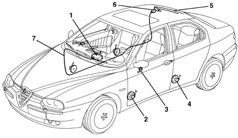
1 - Radio 2 - Front speaker 3 - Tweeter 4 - Rear speaker 5 - Aerial in heated rear windscreen 6 - Aerial control unit 7 - Aerial coaxial cable
According to the specification, the following are supplied as options:
- Standard CONNECT device
- Radio with NAVIGATOR
- CONNECTdevice with NAVIGATION SYSTEM (CONNECT NAV)
RADIO WITH CC (OR CD)
This BOSCH radio has been personalized especially for ALFA ROMEO.
Version with cassette player
Front section
The diagram below illustrates the location of the controls on the front section.
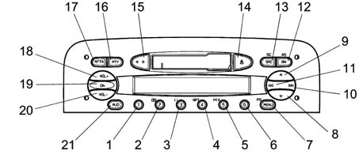
.
N. | Symbol | Function F1 | Function F2 | Tuner | Cassette | C.D. Charg. |
|---|---|---|---|---|---|---|
Press key<1sec | Press Button>1sec | |||||
1 | 1 | |||||
2 | 2 | T 2 DolbyB on/off | ||||
3 | 3 | Recall preset | Recall preset | Recall preset | T3 Pause on/off | |
4 | 4 | Programme preset | T4 Repeat on/off | |||
5 | 5 | T5 Mix on/off | ||||
6 | 6 | |||||
7 | MENU | Access to menu | Scan preselection | Access to menu Scan preselection | Access menu | Access menu |
8 | V | Automatic backwards search | Automatic continuous backwards search | Automatic search | MSS backwards | Previous track selection |
9 | ^ | Automatic forward search | Continuous automatic search Forward | Automatic search | MSS forward | Next track selection |
10 | >> | 1 manual forwards search 2 next PTY prog. 3 fast forward 4 next CD selection | 1 manual forwards search 2 next PTY prog. 3 fast forward 4 next track selection | 1 manual forwards search 2 next PTY prog. | fast forward | Next CD selection |
11 | << | 1 manual backwards search 2 previous PTY prog. 3 fast rewind 4 previous CD selection | 1 manual backwards search 2 previous PTY prog. 3 fast rewind 4 start of track | 1 manual backwards search 2 previous PTY prog. | fast rewind | start of previous CD track selection |
12 | BN | Radio band selection | Travelstore (FMT) | 1 Sel. bands FM1,FM2,FMT,MW,LW 2 Travelstore (FMT) | Travelstore (FMT) | Travelstore (FMT) |
13 | SRC | In order: Tuner, CC, CDC | Source scan | 1 In order: Tuner, CD, CDC 2 FM/AM scan | 1 In order: Tuner, CD, CDC 2 cassette scanning | 1 In order: Tuner, CD, CDC 2 CD scan |
14 | eject | Cassette eject | Cassette eject | Cassette eject | Cassette eject | |
15 | < > | Autoreverse | Autoreverse | |||
16 | PTY | PTY on /off | Display type of programme | 1 PTY on /off 2 Display type of programme | ||
17 | AF/TA | TA on /off | AF on/off | 1 TA on /off 2 TA on /off | 1 TA on /off 2 TA on /off | 1 TA on /off 2 TA on /off |
18 | VOL+ | Increases the volume by one step | Increases the volume rapidly | 1 Increases volume by one step 2 Increases volume quickly | 1 Increases volume by one step 2 Increases volume quickly | 1 Increases volume by one step 2 Increases volume quickly |
19 | ON/OFF | Mute on /off | 1 Radio on 2 Radio off | |||
20 | VOL- | Decreases the volume by one step | Decreases the volume rapidly | 1 Decreases volume by one step 2 Decreases volume quickly | 1 Decreases volume by one step 2 Decreases volume quickly | 1 Decreases volume by one step 2 Decreases volume quickly |
21 | AUD | Selects: bass, treble, balance, fader | Loudness on/off | 1 Selects: bass, treble, balance, fader 2 Loudness on/off | 1 Selects: bass, treble, balance, fader 2 Loudness on/off | 1 Selects: bass, treble, balance, fader 2 Loudness on/off |
See the 'OWNER'S HANDBOOK' for all operating instructions.
Versions with cd player
Front section
The diagram below illustrates the location of the controls on the front section.
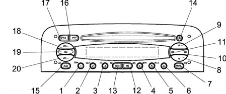
The controls are described below.
N. | Symbol | Function F1 | Function F2 | Tuner | CD player | C.D. Charg. |
|---|---|---|---|---|---|---|
Press Button <1sec | Press Button>1sec | |||||
1 | 1 | 1 Preset recall | 1 Preset memorizing | 1 Preset recall | T1 :1TPM on/off 2 TPM memorizing | |
2 | 2 | 2 TPM on/off | 2 Memorizing/reset TPM | 2 Preset memorizing | T2 reset TPM | T2 reset TPM |
3 | 3 | 3 Pause on/off | T3 :Pause on/off | T3 :Pause on/off | ||
4 | 4 | 4 Repeat on/off | T4: Repeat on/off | T4: Repeat on/off | ||
5 | 5 | 5 Mix on/off | T5: Mix on/off | T5: Mix on/off | ||
6 | 6 | |||||
7 | MENU | Access to menu | Scan preselection | 1 Access to menu 2 Preselection scan | Access menu | Access menu |
8 | V | Automatic backwards search | Automatic continuous backwards search | Automatic search | Previous track selection | Previous track selection |
9 | ^ | Automatic forward search | Automatic continuous forward search | Automatic search | Next track selection | Next track selection |
10 | >> | 1 manual forwards search 2 next PTY prog. 3 next track selection 4 next CD selection | 1 manual forwards search 2 next PTY prog. 3 next track selection | 1 manual forwards search 2 next PTY prog. | Next track selection | Next CD selection |
11 | << | 1 manual backwards search 2 previous PTY prog. 3 start of track 4 previous CD selection | 1 manual backwards search 2 previous PTY prog. 3 start of track | 1 manual backwards search 2 previous PTY prog. | start of track | 1 previous CD selection 2 start of track |
12 | BN | Radio band selection | Travelstore (FMT) | 1 Sel. bands FM1,FM2,FMT,MW,LW 2 Travelstore (FMT) | Travelstore (FMT) | Travelstore (FMT) |
13 | SRC | In order: Tuner, CD, CDD | Source scan | 1 In order: Tuner, CD, CDC 2 FM/AM scan | 1 In order: Tuner, CD, CDC 2 CD scan | 1 In order: Tuner, CD, CDC 2 CD scan |
14 | Eject | CD eject | CD eject | CD eject | CD eject | |
15 | AUD | Selects: bass, treble, balance, fader | Loudness on/off | 1 Selects: bass, treble, balance, fader 2 Loudness on/off | 1 Selects: bass, treble, balance, fader 2 Loudness on/off | 1 Selects: bass, treble, balance, fader 2 Loudness on/off |
16 | PTY | PTY on /off | Display type of programme | 1 PTY on /off 2 Display type of programme | 1 PTY on /off 2 Display type of programme | 1 PTY on /off 2 Display type of programme |
17 | AF/TA | TA on /off | AF on/off | 1 TA on /off 2 TA on /off | 1 TA on /off 2 TA on /off | 1 TA on /off 2 TA on /off |
18 | VOL+ | Increases the volume by one step | Increases the volume rapidly | 1 Increases volume by one step 2 Increases volume quickly | 1 Increases volume by one step 2 Increases volume quickly | 1 Increases volume by one step 2 Increases volume quickly |
19 | ON/OFF | Mute on /off | 1 Radio on 2 Radio off | |||
20 | VOL- | Decreases the volume by one step | Decreases the volume rapidly | 1 Decreases volume by one step 2 Decreases volume quickly | 1 Decreases volume by one step 2 Decreases volume quickly | 1 Decreases volume by one step 2 Decreases volume quickly |
See the 'OWNER'S HANDBOOK' for all operating instructions.
Anti-theft function
When the radio is disconnected from the power supply for more than three minutes the protection code, which comes together with the actual radio, must be entered again.
Code insertion procedure
Type of code: 4 figures from '1111' to '6666' (the numbers 0,7,8,9 are not used because the keys are not present!!)
After connecting the radio to an ALFA 147 for the first time, the following appears on the display:
.
_ _ C O D E _ _ (RDS side)
.
For 2 seconds, and then:
.
_ _- - - - _ _ (RDS side)
.
After this, the first digit is selected by selecting the corresponding station (1-6). After this the digits from 2 to 4 are selected in the same way.
If the four digits are not completed within 20 seconds, the word 'CODE' will appear again on the display for 2 seconds and then '----'. This type of time out is not considered as having entered the incorrect code.
After entering the fourth digit, the radio will start to play.
If an incorrect code is entered, the radio will produce an acoustic signal; the following information will appear on the display:
.
_ _ C O D E _ _ (RDS side)
.
For 2 seconds, and then:
.
_ _ - - - - _ _ (RDS side)
.
advising the user to enter another code.
Each time the user enters an invalid code, the waiting time increases (1 min, 2 min, 4 min, 8 min, 16 min, 30 min, 1h, 2h, 4h, 8h, 16h, 24h) until a maximum time of 24h
The waiting time is displayed as follows:
.
_ _ W A I T_ _ (RDS side)
.
After this it is possible to start the procedure for entering the code again.
Radio pin out
The diagram below shows the rear view of the radio and the location of the connectors.
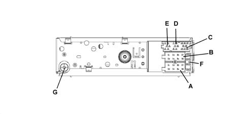
CONNECTOR A
Pin | Signal |
|---|---|
A1 | N.C. |
A2 | MUTE for phone or Bose amplifier Recognition, quando presente |
A3 | N.C. |
A4 | Ignition-operated power supply (+15) |
A5 | 12 V switchable for Aerial |
A6 | Lit up with side lights on |
A7 | Direct power supply (+30) |
A8 | Earth |
CONNECTOR B
Pin | Signal |
|---|---|
B1 | Right rear speaker + |
B2 | Right rear speaker - |
B3 | Right front speaker + |
B4 | Right front speaker - |
B5 | Left front speaker + |
B6 | Left front speaker - |
B7 | Left rear speaker + |
B8 | Left rear speaker - |
CONNECTOR C/D/E
Pin | Signal |
|---|---|
C1 | NC |
C2 | NC |
C3 | NC |
C4 | NC |
C5 | NC |
D6 | Bose amplifier power source, when present |
D7 | Telephone for speakers in + |
D8 | Telephone for speakers in - |
D9 | Telephone mute |
D10 | Signal A steering wheel controls |
D11 | Signal B controls on steering wheel |
D12 | Earths and mute controls on steering wheel |
E13 | ASCI-BUS in (for CDC) |
E14 | ASCI-BUS out (for CDC) |
E15 | N.C. |
E16 | 12V switchable (for CDC) |
E17 | ASCI -BUS Earth (for CDC) |
E18 | NF - Earth input (for CDC) |
E19 | Input L (for CDC) |
E20 | Input R (for CDC) |
CONNECTOR G
Aerial
F: 10A fuse
CONNECT DEVICE
The Bosch radiophone radio has been personalized especially for ALFA ROMEO and includes the CONNECT device for connection to the TARGASYS services.
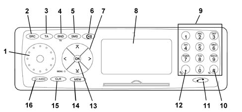
Main controls
Main radiophone controls
1 - ON/OFF: Switching on/off, volume adjustment.
2 - SRC: Press this button to end phone mode and switch automatically to the most recent audio function (radio, cassette player or CD). Phone mode takes priority: it is not possible to switch to audio mode during a phone conversation or while attempting to call a phone number.
3 - TA: Press this key to cancel traffic information priority during a phone call.
4 -BND: Press this button to transfer from phone operation using a handset to phone operation using microphone and speakers. Press the same key again to go back to operation using a handset.
5 - SMS: To recall a message
6 - CONNECT function
7- Selection keys( / V : Use to move between the different items in the radio and phone menu. - << / >> Use to correct items in the phone directory or DSC (Direct Software Control) menu. Used to move the cursor to the left and right during data entry.
8 - Display: Use the displays to operations carried out in radio mode (radio station, PIN code, radio channel search,..) or phone mode (number dialled, phone directory,...)
9 - Selection buttons: Used to dial phone numbers or select a number already stored on a SIM card. Press one of the keys on the right side of the keypad to answer a call.
10- AF / #: Use to enter special characters
11 - (phone symbol): Press this key to transfer to phone mode, to answer a call or to end a call
12 - MIX / *: Use to enter special characters, such as blank spaces, and select numbers stored on a SIM card directly.
13 - OK: Press the key to select the menu items and confirm that the data or operations have been stored.
14 - MEM: Used to activate the phone directory: press lightly to display the phone directory in alphabetical order. Hold the key down for longer to display phone numbers in order.
15 - CLR: Use to delete the last data entries during the data input stage. Used during the menu selection stage to move to the next menu up from the current level (light pressure on the key) or exit from the current menu (sustained pressure on the key).
16- AUDIO: The microphone can be cut out during a phone call (the person at the other end of the phone cannot hear the conversation in the car).
See the 'OWNER'S HANDBOOK' for all operating instructions.
Radio pin out
The diagram below shows the rear view of the radio and the location of the connectors.
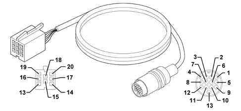
CONNECTOR A
Pin | Signal |
|---|---|
A1 | N.C. |
A2 | N.C. |
A3 | N.C. |
A4 | Direct power supply (+30) |
A5 | 12 V switchable for Aerial |
A6 | Lit up with side lights on |
A7 | Ignition-operated power supply (+15) |
A8 | Earth |
CONNECTOR B
Pin | Signal |
|---|---|
B1 | Right rear speaker + |
B2 | Right rear speaker - |
B3 | Right front speaker + |
B4 | Right front speaker - |
B5 | Left front speaker + |
B6 | Left front speaker - |
B7 | Left rear speaker + |
B8 | Left rear speaker - |
CONNECTOR C /D/ E
Pin | Signal |
|---|---|
C1 | Left rear line output |
C2 | Rear line output signal |
C3 | Earth output |
C4 | Front line output positive |
C5 | Front line output signal |
C6 | Switched power supply |
D7 | Telephone for speakers in + |
D8 | Telephone for speakers in - |
D9 | Telephone mute |
D10 | N.C.. |
D11 | MIC - signal |
D12 | MIC + signal |
E13 | ASCI-BUS in (for CDC) |
E14 | ASCI-BUS out (for CDC) |
E15 | N.C. |
E16 | 12V switchable (for CDC) |
E17 | ASCI -BUS Earth (for CDC) |
E18 | NF-Earth input (for CDC) |
E19 | Input L (for CDC) |
E20 | Input R (for CDC) |
CONNECTOR G
Radio aerial
CONNECTOR H
GSM aerial
F: 10A fuse
Connect function
It is possible to access a set of services known as CONNECT by entering into an agreement with TARGASYS.
- Infomobility
- Medical consultancy
- Roadsidde assistance
Operating principle
Communication from the vehicle to the CONTACT CENTER: when the user requires a service, the CONNECT automatically sends a message to the CONTACT CENTER with all the relevant details (position, vehicle data, reason for the request, etc.). - Communication from CONTACT CENTRE to vehicle. The CONTACT CENTRE sends a message to the vehicle to indicate that the request has been received; the operator then sends the information requested by the Customer via a text message or, in some cases (e.g. asking for medical advice ) calls the customer to speak on the phone.
The CONNECT memorizes the information, even if the Customer does not display it immediately (for example because they are driving). The Customer can then use the information received later on recalling it from the radio phone memory.
RADIO WITH NAVIGATOR
This is a BOSCH radio navigator personalized especially for ALFA ROMEO.
Satellite navigation system
The navigation system has road maps allowing the position of the vehicle on the map to be made known at any moment, showing it on the display. In this way, the driver is taken to the desired destination, guided step-by-step by voice messages and visual information. The system also provides additional information for reaching services of general interest, such as hotels, car parks, restaurants, pharmacies, service stations, hospitals, ALFA ROMEO garages, railway stations, airports, etc.
The system provides:
- Voice messages on the route to follow.
- Display with driving advice, the estimated time and distance from the destination set.
- The possibility of entering special destinations.
- The possibility of memorizing destinations.
- If fitted, the navigator is in the radio-navigator unit.
The navigation system uses the GPS (Global Positioning System) satellite location technology; The GPS system consists of an aerial which allows the GPS satellite location of the vehicle: the aerial is connected to the relevant receiver, located in the integrated unit, via a specific shielded cable.
The CD-ROM reader for the radionavigator allows a special CD containing a map and all other information relating to a country to be read.
The gyroscope - located inside the central unit casing - detects the rotation of the vehicle and enables the map to be orientated.
The vehicle position is identified by the analysis of the GPS data and the speedometer and reverse gear signals coming from the car.
Controls
All the controls are illustrated in the diagram.
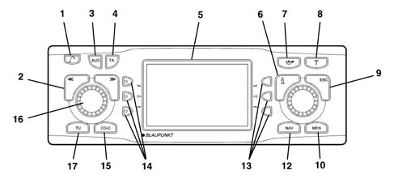
1. Key for raising the front
2. Selector << >> The selector function depends on the menu and the types of operation
3. AUD button, opens the sound menu
4. The TA button activates/deactivates the RDS-TA (Traffic Announcement) function
5. Display
6. Info button i :
a) if this button is pressed whilst driving to your destination, the last navigation voice message is repeated and the destination activated will be displayed;
b) the menu items will be displayed in full ending with '...'
7. Button for activating 'AVOID CONGESTION' function (alternative route)
8. T; recalls the TRAFFIC menu
9. ESC button:
a) allows the escape from the menu without memorizing the changes;
b) allows the return to the previous menu/screen
10. MEN, activates the SETTINGS menu
11. Knob/button:
a) turning: allows the selection of items on the display;
b) pressing: confirms the selection (OK button);
c) pressing for more than 2 seconds: allows the choice of displaying 2 dimensional or 3 dimensionmal pictograms
12. NAV activates the navigation mode
13. Multifunction buttons, the function of these buttons depends on the contents of the menu
14. Multifunction buttons, the function of these buttons depends on the contents of the menu
15. CD-C activates the CD mode (if an audio CD is already inserted) or CD CHANGER (if fitted)
16. Knob/button:
a) turning: allows the adjustment of the volume;
b) pressing: switches the audio/navigation system on/off
17. TU activates the Radio mode
See the 'OWNER'S HANDBOOK' for all operating instructions.
Calibrating the equipment
The INSTALLATION menu makes it possible to calibrate the audio/navigation system using the following choices:
- SYSTEM TEST
- CALIBRATION
- GPS STATE.
The system cannot be calibrated when the 'closed' symbol is displayed in front of the word INSTALLATION.
'new installation' calibration
Proceed as follows:
- press the NAV button (12) to display the main navigation menu
- press the button (10) twice to display the SETTINGS menu (Setup)
- turn the knob/button (11) to select CALIBRATION
- press the knob/button (11) to confirm the selection
- select and confirm the NEW INSTALLATION function.
- carry out the operations requested by the system.
The system carries out a test for which it is necessary to travel for between 8 and 15 km with good GPS reception.
During the first 25% of the calibration procedure or in the case of the NEW INSTALLATION optionit is not possible to drive to the destination.
The route to be followed for the calibration depends on different factors, such as the quality of the GPS reception and driving to the destination. The mileage (km) information only refers to an average figure. It may be clearly lower or higher in the case of poor reception conditions.
System test
A test can be conducted on the system during which the GPS aerial, the correct transmission of the reverse signal and the correct connection of the vehicle to the system are checked.
Press the NAV button (12) to display the main navigation menu
Press the button (10) twice to display the SETTINGS menu (Setup)
Turn the knob/button (11) to select INSTALLATION
Press the knob/button (11) to confirm the selection
Turn the knob/button (11) to select SYSTEM TEST
Carry out the operations requested by the system.
When the system test is over, the installation menu is displayed automatically.
Press the ESC button (9) to return to the previous menu.
Calibration after changing tyres
The diagram below shows the calibration for the tyres.
After having changed the tyres, the audio/navigation system may have to be recalibrated. To calibrate it, proceed as follows:
- press the NAV button (12) to display the main navigation menu
- press the DSC button (8) twice to display the SETTINGS menu (Setup);
- turn the knob/button (11) to select INSTALLATION
- press the knob/button (11) to confirm the selection
- turn the knob/button (11) to select CALIBRATION
- select and confirm the TYRE CHANGE item
- carry out the operations requested by the system.
Calibration
System manual test
The system can be calibrated manually; to carry out this operation it is necessary to drive for 100 metres at a speed below 30 km/h, making sure of the accuracy of the distance travelled.
Proceed as follows:
- press the NAV button (12) to display the main navigation menu
- press the button (10) twice to display the DSC navigation menu;
- select and confirm the SETUP function
- turn the knob/button (11) to select INSTALLATION
- press the knob/button (11) to confirm the selection
- turn the knob/button (11) to select CALIBRATION
- press the knob/button (11) to confirm the MANUAL selection.
The display will show the editing menu to enter the length of the intended distance:
- select the first figure of the distance by turning the knob/button (11)
- press the knob/button (11) to confirm the figure
- continue in this way for the remaining figures to be keyed in
- confirm the distance by turning the knob/button (11) to the 'Enter' symbol
- press the knob/button (11) to confirm the selection.
At this point the display will show the request to travel the distance; to start the calibration, proceed as follows:
- turn the knob/button (11) to select START
- press the knob/button (11) to confirm the selection
- drive for 100 metres following the instructions given previously
- at the end of the 100 metres, stop and select CONFIRM and confirm using the knob/button (11) or INTERR.r to interrupt the procedure or ESC (9) to cancel.
Gps state
To obtain information on the number of GPS satellites which can currently be received and the location of the vehicle, proceed as follows:
- press the NAV button (12) and the display will show the main navigation menu
- press the button (10) twice to display the DSC navigation menu;
- select and confirm the SETUP function
- turn the knob/button (11) to select INSTALLATION
- press the knob/button (11) to confirm the selection and the display will show the INSTALLATION menu
- turn the knob/button (11) to select the GPS INFO display
- confirm the selection by pressing the knob/button (11).
Press the ESC button (9) to return to the previous menu.
Safety
Activating/deactivating the anti-theft protection
The anti-theft code can be activated/deactivated after having displayed the CODE-SETUP menu. When this protection is activated, if the battery is disconnected the system will only remain working if the anti-theft code is entered (see below: ENTERING ANTI-THEFT CODE)
To activate/deactivate the code, proceed as follows:
- press the NAV button (12) to display the main navigation menu
- press the button (10) twice to display the SETTINGS menu (Setup)
- turn the knob/button (11) to select SECURITY
- press the knob/button (11) to confirm the selection
- turn the knob/button (11) to select CODE
- press the knob/button (11) to select ON or OFF. The basic setting is ON (where the anti-theft code is activated). In any case the security code will be requested
- select the enter symbol by turning the knob/button (11)
- press the knob/button (11) to confirm the selection.
Activating/deactivating the anti-theft LED
The anti-theft LED can be activated/deactivated after having displayed the CODE-SETUP menu. To activate/deactivate the LED, proceed as follows:
- press the NAV button (12) to display the main navigation menu
- press the button (10) twice to display the SETTINGS menu (Setup)
- turn the knob/button (11) to select SECURITY
press the knob/button (11) to confirm the selection.
turn the knob/button (11) to select LED
press the knob/button (11) to select ON or OFF. The basic setting if ON (with the anti-theft LED activated)
Return to the basic settings
It is possible to return to the basic audio/navigation system settings:
- press the NAV button (12) to display the main navigation menu
- press the button (10) twice to display the SETTINGS menu (Setup)
- turn the knob/button (11) to select SYS. FACTORY.
- press the knob/button (11) to confirm the selection.
The display will show the following screens according to situation A , B or C.
Situation A) When a navigation CD is inserted, the display will show the reset request (cancellation) of all navigation values; all the memories for the destinations and route options are cancelled. To cancel the memories, proceed as follows:
- select YES by turning the knob/button (11)
- press the knob/button (11) to confirm the selection.
To keep the values in the memories intact:
- select NO by turning the knob/button (11)
- press the knob/button (11) to confirm the selection.
When there is no navigation CD present, the display moves directly onto the next question.
Situation B) The display shows the request to cancel the CD audio source settings in the memory.
To cancel the memories, proceed as follows:
- select YES by turning the knob/button (11)
- press the knob/button (11) for more than 2 seconds to confirm the selection.
To keep the values in the memories intact:
- select END by turning the knob/button (11);
- press the knob/button (11) for more than 2 seconds to confirm the selection.
Situation C) Lastly, the display will show the request for cancelling all the options selected in the SETTINGS menu (Setup) and the volumes for all the audio sources.
To cancel the memories, proceed as follows:
- select YES by turning the knob/button (11)
- press the knob/button (11) for more than 2 seconds to confirm the selection.
To keep the values in the memories intact:
- select NO by turning the knob/button (11)
- press the knob/button (11) for more than 2 seconds to confirm the selection.
Antitheft protection
The satellite navigator has an anti-theft protection system consisting of a 4 digit secret code.
The protection system renders the satellite navigation system inoperable once it has been extracted from the dashboard and stolen.
Code card
This document certifies the ownership of the satellite navigation system. It contains the model, serial number and secret code.
Entering the anti-theft code
When the audio/navigation system is switched on after there has been a break in the power supply (battery disconnected, equipment disconnected, fuse blown, etc.) the display will ask for the anti-theft code to be entered.
To enter the anti-theft code, proceed as follows:
- select the first digit of the code by turning the knob/button (11)
- confirm the first digit by pressing the knob/button (11)
- continue in the samy way for the other 3 digits until the anti-theft code is complete.
If an incorrect digit is entered, proceed as follows:
- turn the knob/button (11) to the 'left arrow' symbol
- press the knob/button (11) to confirm the deletion.
When the code is complete, select the enter symbol and confirm using the knob/button (11), then the equipment will switch itself back on in Radio mode.
Radio pin out
The diagram below shows the rear view of the radio and the location of the connectors.
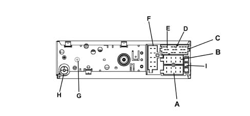
CONNECTOR A
Pin | Signal |
|---|---|
A1 | Speedometer signal |
A2 | Telephone MUTE |
A3 | Reversing signal |
A4 | Direct power supply (+30) |
A5 | 12 V switchable for Aerial |
A6 | Lit up with side lights on |
A7 | Ignition-operated power supply (+15) |
A8 | Earth |
CONNECTOR B
Pin | Signal |
|---|---|
B1 | Right rear speaker + |
B2 | Right rear speaker - |
B3 | Right front speaker + |
B4 | Right front speaker - |
B5 | Left front speaker + |
B6 | Left front speaker - |
B7 | Left rear speaker + |
B8 | Left rear speaker - |
CONNECTOR C/D/E
Pin | Signal |
|---|---|
C1 | Left rear line output |
C2 | Rear line output signal |
C3 | Earth output |
C4 | Front line output positive |
C5 | Front line output signal |
C6 | Switched power supply |
D7 | Telephone for speakers in + |
D8 | Telephone for speakers in - |
D9 | Telephone mute |
D10 | Signal A steering wheel control signals connector |
D11 | Signal B controls on steering wheel |
D12 | Remote control earths and mute |
E13 | ASCI-BUS in (for CDC) |
E14 | ASCI-BUS out (for CDC) |
E15 | 1 12V permanent |
E16 | (for CDC) |
E17 | ASCI -BUS Earth (for CDC) |
E18 | NF-Earth input (for CDC) |
E19 | Input L (for CDC) |
E20 | Input R (for CDC) |
CONNECTOR F
not used
CONNECTOR H
Radio aerial
CONNECTOR G
GPS aerial
I: Fuse 10 A
CONNECT DEVICE WITH NAVIGATOR (CONNECT-NAV)
This is a BOSCH radio navigator personalized especially for ALFA ROMEO integrated with the CONNECT device.
Controls
All the controls are illustrated in the diagram.
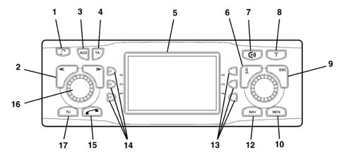
1. Key for raising the front 2. Selector << >> The selector function depends on the menu and the types of operation 3. AUD button, opens the sound menu 4. The TA button activates/deactivates the RDS-TA (Traffic Announcement) function 5. Display 6. Info button I: - a) if this button is pressed whilst driving to your destination, the last navigation voice message is repeated and the destination activated will be displayed; - b) the menu items will be displayed in full ending with '...' 7. CONNECT function 8. T; recalls the TRAFFIC menu 9. ESC button: - a) allows the escape from the menu without memorizing the changes; - b) allows the return to the previous menu/screen 10. MEN, activates the SETTINGS menu 11. Knob/button: - a) rotating: allows the selection of items in the display; m - b) pressing: confirms the selection (OK button); - c) pressing for more than 2 seconds: allows the choice of displaying 2 dimensional or 3 dimensionmal pictograms 12. NAV activates the navigation mode 13. Multifunction buttons, the function of these buttons depends on the contents of the menu 14. Multifunction buttons, the function of these buttons depends on the contents of the menu 15. Phone function 16. Knob/button: - a) rotating: allows the adjustment of the volume; - b) pressing: switches the audio/navigation system on/off 17. TU activates the Radio mode
See the 'OWNER'S HANDBOOK' for all operating instructions.
Radio pin out
The diagram below shows the rear view of the radio and the location of the connectors.
CONNECTOR A
Pin | Signal |
|---|---|
A1 | Speedometer signal |
A2 | Telephone MUTE |
A3 | Reversing signal |
A4 | Direct power supply (+30) |
A5 | 12 V switchable for Aerial |
A6 | Lit up with side lights on |
A7 | Ignition-operated power supply (+15) |
A8 | Earth |
CONNECTOR B
Pin | Signal |
|---|---|
B1 | Right rear speaker + |
B2 | Right rear speaker - |
B3 | Right front speaker + |
B4 | Right front speaker - |
B5 | Left front speaker + |
B6 | Left front speaker - |
B7 | Left rear speaker + |
B8 | Left rear speaker - |
CONNECTOR C/D/E
Pin | Signal |
|---|---|
C1 | Left rear line output |
C2 | Rear line output signal |
C3 | Earth output |
C4 | Front line output positive |
C5 | Front line output signal |
C6 | Switched power supply |
D7 | Telephone for speakers in + |
D8 | Telephone for speakers in - |
D9 | Telephone mute |
D10 | Signal A controls on the steering wheel signal connector |
D11 | Signal B controls on steering wheel |
D12 | Remote control earths and mute |
E13 | ASCI-BUS in (for CDC) |
E14 | ASCI-BUS out (for CDC) |
E15 | 1 12V permanent |
E16 | (for CDC) |
E17 | ASCI -BUS Earth (for CDC) |
E18 | NF-Earth input (for CDC) |
E19 | Input L (for CDC) |
E20 | Input R (for CDC) |
CONNECTOR F
Pin | Signal |
|---|---|
F3 | CAN between radio and GSM BOX |
F5 | CAN between radio and GSM BOX |
CONNECTOR H
Radio aerial
CONNECTOR G
GPS aerial
I: Fuse 10 A
RADIO SPEAKERS
The vehicle has a radio system complete with speakers. The acoustic system comprises:
- 2 tweeters with a power of 40 W max each;
- 4 x 165 mm diffusers (2 front and 2 rear) with a maximum power of 40 W each (40 W + 8 W for the front passenger side diffuser, if the radio phone preparation is fitted).
RADIO AERIAL
The car is fitted with an internal aerial screen-printed to the back window. It will only receive AM stations. The FM station reception screen-printing is included in the demister element.
An aerial signal amplifier is located on the right rear pillar.
GSM AERIAL
On versions with a radio phone or on version with a CONNECT, there is a GSM aerial (900 MHz single band).
It is located in the rear part of the roof and is connected through a special cable:
- to the connector on the tunnel
- to the radio and CONNECT.
- to the GSM BOX (CONNECT-NAV version)
GPS AERIAL
On versions with a navigator (radio with navigator or CONNECT with navigator) there is a GPS aerial.
This is an aerial located on the roof to allow the GPS (Global Positioning System) satellite location of the vehicle: the aerial is connected to the relevant receiver, in the radio housing, by means of a specific shielded cable.
The two aerials described above are present in a single device incorporated in a single basic aerial with two parallel cables.
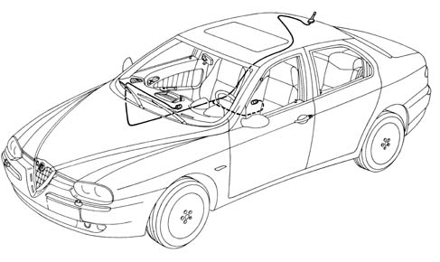
Gsm box
On the CONNECT-NAV version, it is not possible to make a direct connection between radio and GSM/GPS aerial.
A special GSM BOX, located in the glove compartment, is therefore fitted to act as an electronic interface. Customers insert their SIM cards into this device to control their GSM phones
GSM-BOX PIN OUT
PIN | SIGNAL |
|---|---|
1 | Earth |
2 | N.C. |
3 | N.C. |
4 | Telephone MUTE |
5 | N.C. |
6 | N.C. |
7 | Speakers output - |
8 | CAN line to the radio |
9 | MIC input |
10 | Supply + 15 |
11. | +30 supply |
12. | N.C. |
13 | N.C. |
14 | N.C. |
15 | N.C. |
16 | Speakers output + |
17 | CAN line to the radio |
18 | MIC input |
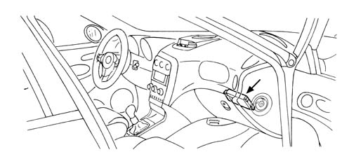
Applies to: all engines; production: da 03/02 a 09/03, da 10/03; only with equipment: Radio controls on steering wheel
RADIO CONTROLS ON THE STEERING WHEEL (IF FITTED)
View of electrical controls on the steering wheel.
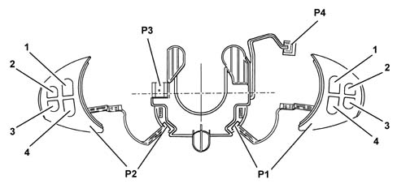
P1 - Right radio controls embellishment 1 - Scan + control 2 - Source control 3 - Telephone control 4 - Scan control P2 - Left radio controls embellishment 1 - Volume + control 2 - Mute control 3 - Voice control 4 - Volume control P3 - Connection to electrical equipment P4 - Horn connection
Wiring diagram
The wiring diagram is illustrated in the diagram:
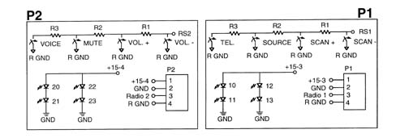
P1 - Right radio controls embellishment P2 - Left radio controls embellishment R1 - 100 ohm resistor R2 - 220 ohm resistor R3 - 680 ohm resistor
On versions with a Connect, an impedance adaptor is required for connecting the radio with the controls.
PIN | SIGNAL |
|---|---|
1 | Mute, Vol+, Vol- control signals |
2 | Source, Scan+, Scan- control signals |
3 | Controls earth |
4 | Bus IN |
5 | Bus OUT |
6 | Bus GND |
7 | Switched power supply |
A different adaptor is required for versions with a Navigator.
PIN | SIGNAL |
|---|---|
relay | Mute, Vol+, Vol- control signals |
relay | Source, Scan+, Scan- control signals |
3 | Controls earth |
4 | Input from radio |
5 | Switched power supply |
6 | Earth from radio |
Applies to: all engines; production: da 03/02 a 09/03, da 10/03; only with equipment: Sedan and Sound System with CD player
CD-CHANGER SYSTEM (IF FITTED)
A special (Bosch) changer makes it possible to load up to 10 discs which are then selected using the radio controls.
The changer only works if it contains at least one CD: the CDs should be inserted correctly and the flap should be properly closed.
Applies to: all engines; production: da 03/02 a 09/03, da 10/03; only with equipment: Sound System with CD player
Location
The CD Changer is fitted in the luggage compartment, in the area of the left wheel arch
It is connected to the radio via a special lead
For any repairs to the CDC, follow the same procedure as for the radio
Cd changer lead
Connector, radio side:
PIN | SIGNAL |
|---|---|
13 | ASCI bus CDC - radio |
14 | ASCI bus radio - CDC |
15+ | Permanent power supply |
16+ | Switched power supply |
17 | digital earth |
18 | audio earth |
19 | CDC left audio |
20 | CDC right audio |
Rapid attachment multipolar connector, CDC side:
Pin | Signal |
|---|---|
relay | digital earth |
3 | Permanent power supply |
4 | Switched power supply |
6 | audio earth |
8 | CDC right audio |
10 | ASCI bus CDC - radio |
12. | CDC left audio |
13 | ASCI bus radio - CDC |
Applies to: all engines; production: da 03/02 a 09/03, da 10/03; only with equipment: Station Wagon and Sound System with CD player
Up to six discs can be loaded with the CLARION CD Changer .
For all other information, refer to the previous description of the BOSCH CD Changer.
Applies to: all engines; production: da 03/02 a 09/03, da 10/03; only with equipment: Sound System with CD player
Starting from September 03 the BOSCH CD Changer will also be fitted on the Sportwagon